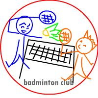

IPlanning
株式会社 アイプランニング
Towa Edogawabashi building 8F
Yamabuki-cho 347
Shinjuku-ku Tokyo
Phone: 03-5225-1147
サークル活動
アイプランニングにおけるサークル活動は、社員の極秘交流の場と化していることが多く、その全貌を正直掴みきれていません。こっそり毎日活動をしているサークルもあれば、しばらく活動していないサークルもあるようです。
また、サークルとして活動していな場合でも、多くの社員が他サークルとの掛け持ちをしていることが多く、水面下で社員同士の交流が盛んに行われているという不思議な現象が発生しています。
野球部
| チーム名 | スファルツァンド |
| HP | スファルツァンド通信 |
| 平均年齢 | 33歳くらい |
| メンバー構成 | 老若男女 未経験者多数 |
| メンバー数 | １４名くらい |
毎年行われる秋の健保野球大会での上位進出を目指し、埼玉県の荒川河川敷にて練習に励んでいます。過去にはCブロックでBEST１６入りし、過去最高の成績を収めたこともありました。
老若男女、経験の有無を問わないメンバー構成がもたらす、奇想天外、予測不能なプレーに、時として敵味方を問わず大爆笑が起こる事も・・・
ちなみに、スファルツァンド(sforzando)とは、音楽用語で、「ある音に、特に強いアクセントをつけて演奏せよ」という意味を持ちます。つまり・・・メロディーちゃん？
バドミントン部

チーム発足当時は、社内メンバーだけでのサークル活動を行っておりましたが、最近では活動拠点である埼玉県朝霞市付近の地域密着型のサークルと変貌し IPL社員のみならず、地域の方々と練習に励んでいます。バドミントンをやりたいという気持ちと、多くの人との交流を楽しみたいという想いが、会社の枠を超えた「新しい形のサークル」を誕生させました。
※バドミントン部のHPは最近、更新されていないようですが、元気な活動状況が報告されています。
チーム名の「チーム梵天」は、練習後の行きつけの飲み屋さん「梵天」から拝借。
しかし・・・すでに、その店は存在しないとのこと。。(涙)
| チーム名 | チーム梵天 |
| HP | IPLバドミントン部 |
| 平均年齢 | 35歳くらい |
| メンバー構成 | IPL＋地域の方々 |
| メンバー数 | ４名＋地域の方々多数 |
チーム発足当時は、社内メンバーだけでのサークル活動を行っておりましたが、最近では活動拠点である埼玉県朝霞市付近の地域密着型のサークルと変貌し IPL社員のみならず、地域の方々と練習に励んでいます。バドミントンをやりたいという気持ちと、多くの人との交流を楽しみたいという想いが、会社の枠を超えた「新しい形のサークル」を誕生させました。
※バドミントン部のHPは最近、更新されていないようですが、元気な活動状況が報告されています。
チーム名の「チーム梵天」は、練習後の行きつけの飲み屋さん「梵天」から拝借。
しかし・・・すでに、その店は存在しないとのこと。。(涙)
スキー部
冬が来ると暖かな地に移動する渡り鳥とは逆に、冬山に雪を目指して飛び立つスキー、スノボーファン集団。時にはバスで、時には飛行機でと、ツアーメンバーを募集しながら活動中。
大雪などの悪天候によって、帰りの飛行機が飛ばずに、空港で寝泊りなんてことも・・・(^^;)
彼らのモットーは「リフト代の元を取る」。某先輩からの指令を雪のような純真な心で、長年忠実に守りながら取り組んでいます。
大雪などの悪天候によって、帰りの飛行機が飛ばずに、空港で寝泊りなんてことも・・・(^^;)
彼らのモットーは「リフト代の元を取る」。某先輩からの指令を雪のような純真な心で、長年忠実に守りながら取り組んでいます。
| チーム名 | なし |
| HP | なし |
| 平均年齢 | 31歳くらい？ |
| メンバー構成 | 雪好きの老若男女 |
| メンバー数 | ４〜８名 |
ボウリング部
最近は、活発な活動がみられないボウリング部。。こっそりと池袋などで練習にあけくれたあの勢いはどこへいったのか！？
最近の活動は・・・社員旅行で全員参加のボウリング？もしかすると、秘密裏に活動をしているのかも・・・(要調査)
※ボウリング部のHPは、活動すると更新されるのでわかりやすかったのですが・・・
過去のボウリング部の大会においてはスコアが２００オーバーというハイレベルな展開もありましたね。
最近の活動は・・・社員旅行で全員参加のボウリング？もしかすると、秘密裏に活動をしているのかも・・・(要調査)
※ボウリング部のHPは、活動すると更新されるのでわかりやすかったのですが・・・
過去のボウリング部の大会においてはスコアが２００オーバーというハイレベルな展開もありましたね。
| チーム名 | IPLボウリング部 |
| HP | IPLボウリング部 |
| 平均年齢 | 33歳くらい |
| メンバー構成 | ・ストレス発散したい人 ・その日が暇な人 |
| メンバー数 | ４名〜１２名 |
ゴルフ部
社員旅行や、創立記念日にはゴルフ好きの社員が集ってゴルフを満喫。個人個人でライバルを見つけながら戦う勇姿をみれば、スコアの良し悪しなど・・・気にする事はない・・・
そういえば・・・最近、活動が無いので、ゴルフ好きの社長が、ちょっと寂しそう・・・
※ゴルフ部のHPのスコアはあまり見ないで下さいね・・・
高反発系のドライバーの新基準に適応できないというわけで活動していないわけではありません。キツイけど・・・
そういえば・・・最近、活動が無いので、ゴルフ好きの社長が、ちょっと寂しそう・・・
| チーム名 | IPLゴルフ部 |
| HP | IPLゴルフ部 |
| 平均年齢 | 38歳くらい |
| メンバー構成 | ・ゴルフクラブをもっている人 ・ゴルフを始めたい人 |
| メンバー数 | ４名〜８名 |
高反発系のドライバーの新基準に適応できないというわけで活動していないわけではありません。キツイけど・・・
麻雀部
なんとなく「やるか」の一声で始まる麻雀部。会社近くの雀荘へと足を運ぶ。最近は、妻子持ちが増えた為か、活動の様子は社員旅行の夜などに限定されている。
今年の社員旅行では、こっそり新人社員達が麻雀を打っていたという目撃証言があり、そろそろ復活ののろしがあがるかも・・・
※麻雀部HPにIPL麻雀公式ルールの記載あり
今年の社員旅行では、こっそり新人社員達が麻雀を打っていたという目撃証言があり、そろそろ復活ののろしがあがるかも・・・
| チーム名 | IPL麻雀部 |
| HP | IPL麻雀部 |
| 平均年齢 | ？ |
| メンバー構成 | ・麻雀が打てる人 ・なぜか雀荘に連れてこられた人 |
| メンバー数 | ４名〜８名 |
将棋部
IPLサークルの中でもっとも地味に活動を続けているのがこの将棋部。毎日毎日、昼休みにネット将棋で切磋琢磨。将棋倶楽部２４、Yahoo将棋でこのメンバーを目撃しない日はない。
将棋部ボスの棋力は、そん所そこらの町道場では手に負えないほど・・・
挑戦したい人はネットでボスを見つけよう！
※将棋部HPのシンプルさは、「将棋部は将棋を指すべし」という気持ちの現われか！？
将棋部ボスの棋力は、そん所そこらの町道場では手に負えないほど・・・
挑戦したい人はネットでボスを見つけよう！
| チーム名 | IPL将棋道場２４ |
| HP | IPL将棋道場２４ |
| 平均年齢 | 34 |
| メンバー構成 | ・将棋好き |
| メンバー数 | ３名 |
ママチャリ部
| チーム名 | |
| HP | |
| 平均年齢 | 28歳くらい |
| メンバー構成 | レースを楽しむ心を持つ集団 |
| メンバー数 | ６名 |
2012年より始動したママチャリレースの上位進出を目指す、ママチャリをこよなく愛する集団です。レースで好成績を修めたものの目標には届かなかったことから、次の大会へ向け活動しています。大会への上位入賞を目指す傍ら、決して楽しむ心を忘れてはいけないというのが部のモットーです。随時部員及びマネージャー募集中です。
その他
アイプランニングには、まだまだ隠れたサークルが存在します。「卓球」や「登山」、さらには、なんと「競馬」まで。趣味があったら即活動。「温泉部」があるという噂もあります。
アイプランニングのサークルは、たった一人の趣味だとしても、自分の楽しみを皆で共有しようという気持ちをもつだけで、好奇心旺盛な社員がどんどんメンバーとして集まってくる不思議な形態を取っています。
この先も、その時々の時代の流れの中で、様々なサークルが生まれてくることでしょう。今どんなサークルが存在しているのか、そしてこれから、いったいどんなサークルが飛び出すのか、こんな事を考えているだけでも会社勤めが楽しくなります。。
アイプランニングのサークルは、たった一人の趣味だとしても、自分の楽しみを皆で共有しようという気持ちをもつだけで、好奇心旺盛な社員がどんどんメンバーとして集まってくる不思議な形態を取っています。
この先も、その時々の時代の流れの中で、様々なサークルが生まれてくることでしょう。今どんなサークルが存在しているのか、そしてこれから、いったいどんなサークルが飛び出すのか、こんな事を考えているだけでも会社勤めが楽しくなります。。
IPL インフォメーション
2009/12/28
Google App Engine/Javaで簡易Blogを追加しました。
[詳細]
2009/12/28
Google App Engine/Javaデータストアの特徴を追加しました。
[詳細]
2009/12/28
Google App Engine/Javaの特徴・Eclipseプラグインを追加しました。
[詳細]
2009/07/14
Curl特集(2) ドキュメントビューアを作るを追加しました。
[詳細]
2009/06/11
Curl特集(1) CurlとRubyOnRails連携調査を追加しました。
[詳細]
2009/04/01
Flashプレゼン作成ツールDebugMode Winkを追加しました。
[詳細]
2009/01/06
開発効率を向上させるフリーソフトウェアを追加しました。
[詳細]
2008/10/16
AJAX+JavascriptDBで簡易CSVデータベース利用を追加しました。
[詳細]
おかげさまで創立２５周年
アイプラニングは、おかげさまで創立２５周年を迎えました。社会がバブル全盛の時も不況の時もアイプランニングを星の数ほどあるソフトハウスの中で御ひいきしていただいたお客様あってのこの２５年でした。
ありがとう御座います。これからも会社のシンボルとして掲げる「イノベーション」の名に恥じないシステム開発をお約束いたし、お客様の更なる発展をお手伝いさせていただきます。
ありがとう御座います。これからも会社のシンボルとして掲げる「イノベーション」の名に恥じないシステム開発をお約束いたし、お客様の更なる発展をお手伝いさせていただきます。
プログラマ募集
■第一は「人物重視」
お客さまの立場に立ってモノが作れる判断力、企画力、コンサルティング能力を磨きたくはありませんか？プログラム能力は、プロジェクトを通じて自然と能力があがるようなシステムになっています。初心者プログラマであっても３年程度で、その能力は初心者だったとは思えないくらいのスキルとなっています。
これは、「最初は誰でも初心者だ」という教育方針があるため、また、多くの社員が入社して初めてプログラミングにふれたという経験があるために自分のつまづき体験や、成功体験を含めた教育がなされているからなのです。
このようにアイプランニングでは、社員１人ひとりの個性と人間性を重視し、スキルにあったマンツーマン教育であなたを一人前のエンジニアへと成長させていきます。 それは誠実なスタッフが集まっているからこそ、どんなお客様からも信頼される企業に成長できるから。私たちはそう考えています。
お客さまの立場に立ってモノが作れる判断力、企画力、コンサルティング能力を磨きたくはありませんか？プログラム能力は、プロジェクトを通じて自然と能力があがるようなシステムになっています。初心者プログラマであっても３年程度で、その能力は初心者だったとは思えないくらいのスキルとなっています。
これは、「最初は誰でも初心者だ」という教育方針があるため、また、多くの社員が入社して初めてプログラミングにふれたという経験があるために自分のつまづき体験や、成功体験を含めた教育がなされているからなのです。
このようにアイプランニングでは、社員１人ひとりの個性と人間性を重視し、スキルにあったマンツーマン教育であなたを一人前のエンジニアへと成長させていきます。 それは誠実なスタッフが集まっているからこそ、どんなお客様からも信頼される企業に成長できるから。私たちはそう考えています。
■応募者へのメッセージ
プログラマを目指して会社に入ったものの、思った通りの仕事をさせてもらえなかったと思っている人、教育システムが十分でなかったためにスキルが身に付いていないと思っている人も気軽にご応募ください。パソコンのスキルに自信のない方でも、マンツーマンの研修制度で一人前に成長できるフィールドを整えておりますので安心してご応募くださいね。
知識だけでなく本当の開発力が身につく環境でのシステム開発でみつかる『やりがい』はもちろん、プライベートでも今までになかった充実感が得られますよ。
プログラマを目指して会社に入ったものの、思った通りの仕事をさせてもらえなかったと思っている人、教育システムが十分でなかったためにスキルが身に付いていないと思っている人も気軽にご応募ください。パソコンのスキルに自信のない方でも、マンツーマンの研修制度で一人前に成長できるフィールドを整えておりますので安心してご応募くださいね。
知識だけでなく本当の開発力が身につく環境でのシステム開発でみつかる『やりがい』はもちろん、プライベートでも今までになかった充実感が得られますよ。